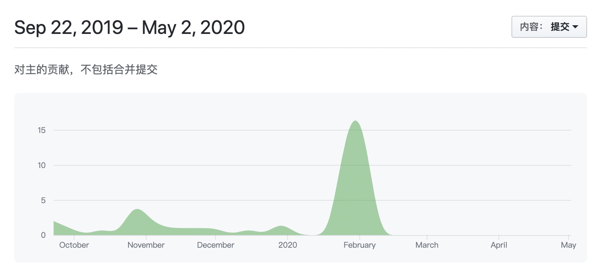

内容
Oracle 12c 考试认证
- The Oracle Certified Associate (OCA) for Oracle Database 12c assesses fundamental concepts and skills DBAs need for daily operational management and maintenance.
- Building upon the competencies in the Oracle Database 12c OCA certification, the Oracle Certified Professional (OCP) for Oracle Database 12c includes the advanced knowledge and skills required of top-performing database administrators, including development and deployment of backup, recovery and Cloud computing strategies.
- The Oracle Certified Master (OCM) for Oracle Database 12c - a very challenging and elite top-level certification - certifies the most highly skilled and experienced database experts.
OCA
1Z0-071
考试价格： ¥1077 | 时长： 120分钟 | 及格分数： 63％ | 78题
- Oracle Database 12c：SQL基础知识1Z0-061 （于2019年11月30日淘汰）
- Oracle简介：SQL和PL / SQL 1Z0-001 （已淘汰**）**
- Oracle9i简介：SQL 1Z0-007 （已淘汰 ）
- Oracle Database SQL Expert 1Z0-047 （已淘汰）
- Oracle数据库：SQL基础知识I 1Z0-051 （已淘汰 ）
1Z0-062
考试价格： ¥1077 | 时长： 120分钟 | 及格分数： 64％ | 67题
OCP
考试价格： ¥1077 | 时长： 120分钟 | 及格分数： 60％ | 80题
OCM
考试价格： ¥9,768 | 时长： 2 days | 及格分数： 59.95% | 80题
Oracle考试必须原厂培训或指定合作机构培训才可参加考试。
考核分数概览
| 认证 | 编号 | 时长 | 总题数 | 及格分数 | 最大错误题数 |
|---|---|---|---|---|---|
| OCA | 1Z0-071 | 2小时 | 78 | 63% | 28 |
| 1Z0-062 | 2小时 | 67 | 64% | 24 | |
| OCP | 1Z0-063 | 2小时 | 80 | 60% | 32 |
| OCM | 12cOCM | 2天 | 80 | 59.95% | 31 |
考点明细
大宝的OCP
本定在2020年3月份的OCP考试，因疫情原因推迟到9月底。真正用在学习的时间应该算起来只有3个月。
终于到了认真计划看题的时间节点了。
看题前，先回顾一下学习Oracle 12C的时间段情况：
$ git log --date=iso | perl -nalE 'if (/^Date:\s+[\d-]{10}\s(\d{2})/) { say $1+0 }' | sort | uniq -c|perl -MList::Util=max -nalE '$h{$F[1]} = $F[0]; }{ $m = max values %h; foreach (0..23) { $h{$_} = 0 if not exists $h{$_} } foreach (sort {$a <=> $b } keys %h) { say sprintf "%02d - %4d %s", $_, $h{$_}, "*"x ($h{$_} / $m * 50); }' |
1. 学习时间主要集中在下午，晚上和凌晨😄
2. 2019-09-22 22:16:54 ～ 2020-05-03 01:54:30 完成Oracle 12C OCP的所有课程学习（周末上课14天，自己看书做练习）。预计到拿证共 8个月
2. 2019-09-22 22:16:54 ～ 2020-05-03 01:54:30 完成Oracle 12C OCP的所有课程学习（周末上课14天，自己看书做练习）。预计到拿证共 8个月

我的学习记录目前保存在Github中，待完成OCP考核后，会逐步完善学习记录和考题到博客中来。
考试/证书仅仅是更好得学习一门技术的方式，而不是目标；考试会让你获得这门技术的广度，日常的学习和工作的实践则收获技术的深度。*